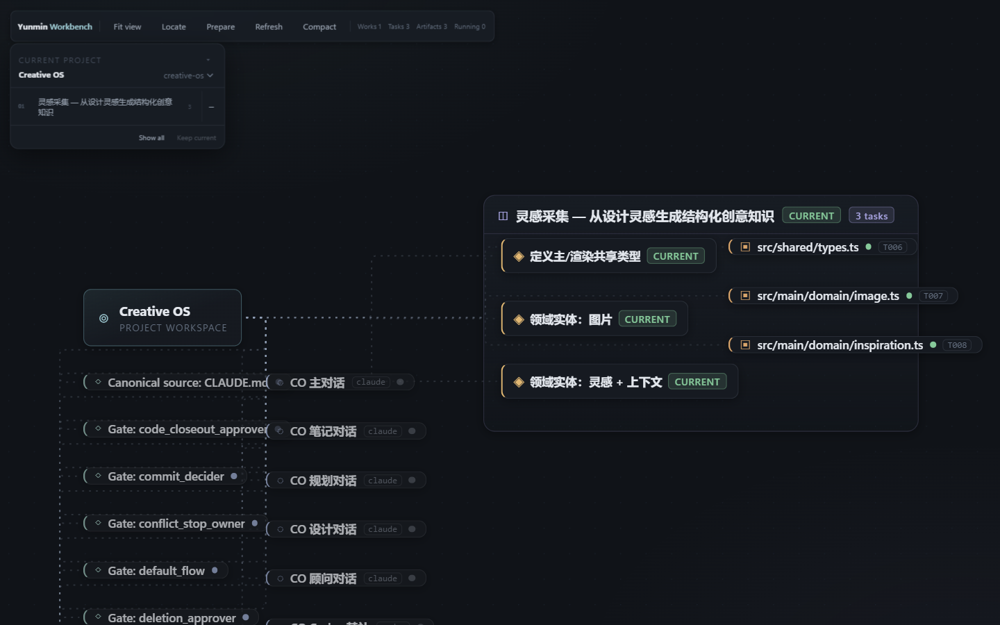
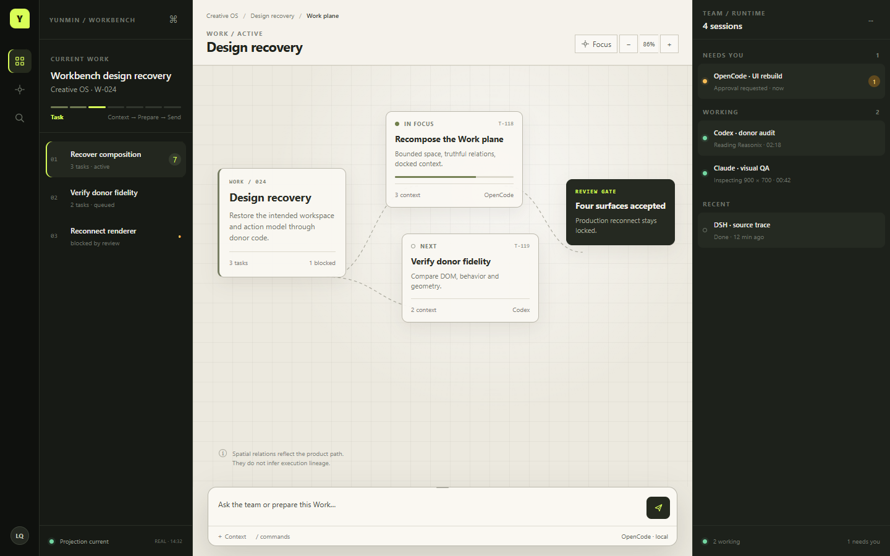
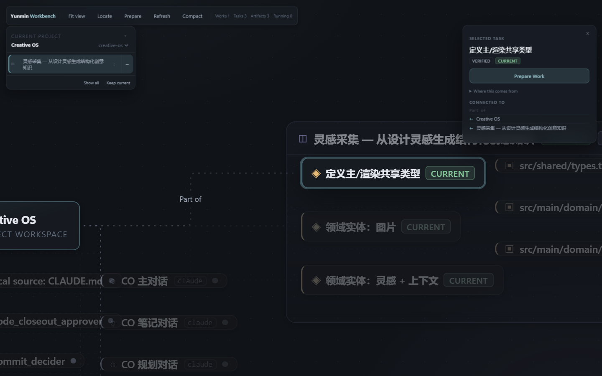
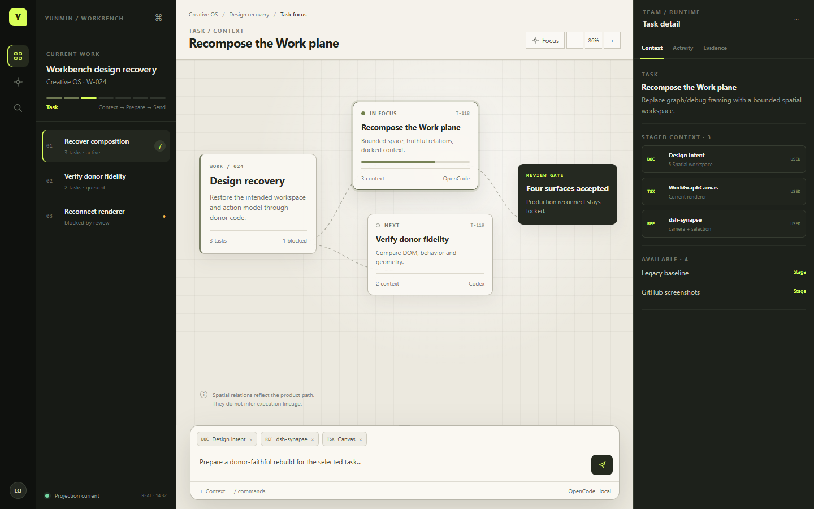
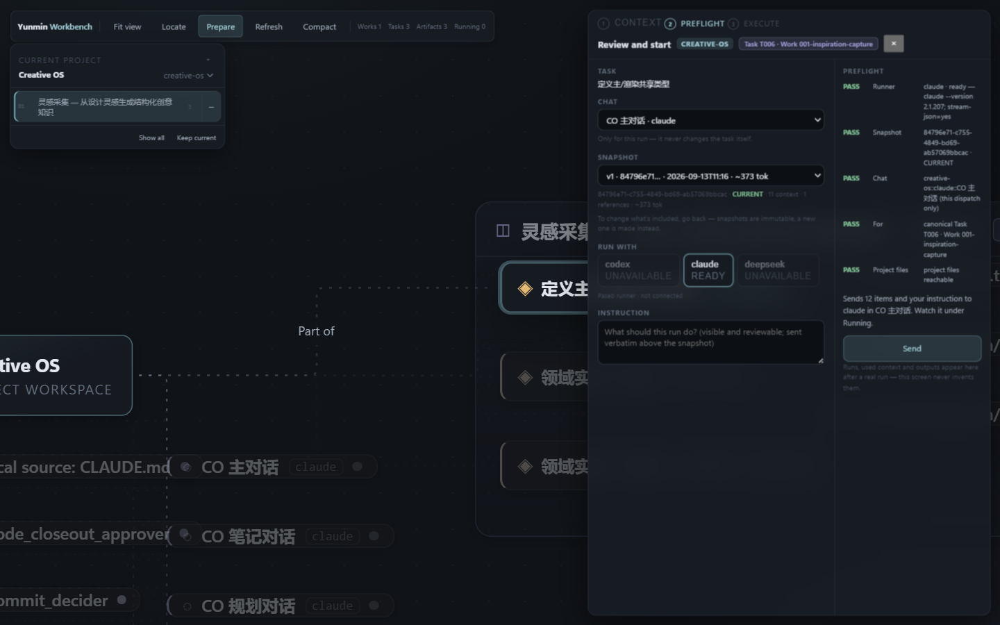
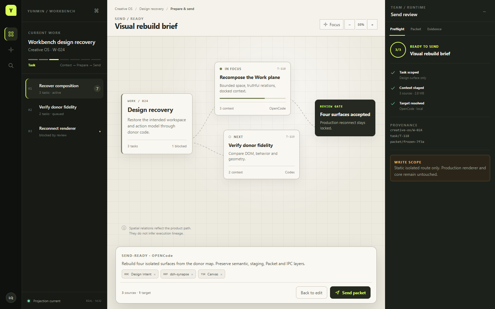
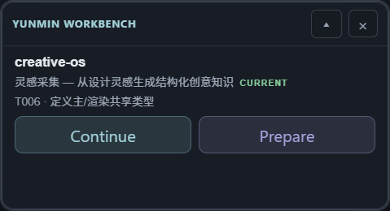
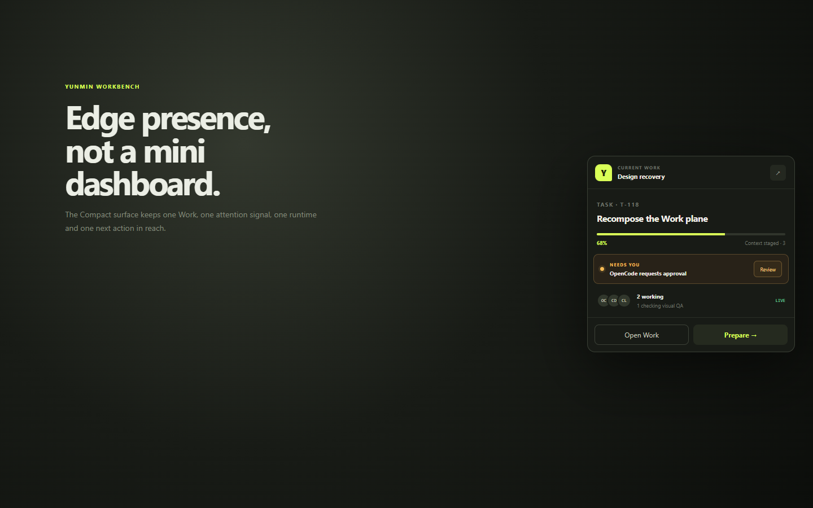

01 · Full Hero
从无限 graph/debug 画布与悬空工具条，改为有边界的 Work plane、永久 session presence、固定 action dock。


Current: toolbar + detached project card + graph nodes. New: 64px presence rail + 248px Work rail + bounded plane + 320px runtime dock.
dsh-synapse viewport/world/relation/object layers; Work objects replace inferred graph entities.
OpenCode rail containment + Agent Cockpit row order; provider, state and attention remain separate.
Responsive evidence: 900 × 700
{kind=link}
02 · Focused Work
当前 floating selected-task panel 会盖住 graph；新稿把 Context 置于独立 dock track，composer 与 staged context 属于同一个 action surface。


Selection is object state; detail occupies the 320px dock instead of absolute-positioning above the plane.
Staged and available context are visibly separate. USED only appears on staged fixture sources.
Reasonix context shelf sits inside the composer; OpenCode request-dock geometry bounds the lower surface.
Responsive evidence: 900 × 700
{kind=link}
03 · Send-ready
Send 不再是另一块悬空表单：同一个底部 dock 展开为 packet review，右 dock 同步切为 preflight / evidence。


Context chips, instruction, target and send action stay inside one in-flow dock.
Scope → staged sources → target → provenance → write boundary.
The fixture explicitly shows that production renderer and core remain untouched.
Responsive evidence: 900 × 700
{kind=link}
04 · Compact
Compact 只保留当前 Work、一个 attention、runtime presence 和一个 next action；不压缩 Full UI，不生成第二套导航。


368px fixed content width, viewport max-height, contained sections and two terminal actions.
Current Work and agent presence survive without recreating the project/task tree.
Visual shell is replaceable; existing Compact snapshot, handoff and window lifecycle remain.
Responsive evidence: 900 × 700
{kind=link}
Docking and viewport contract
| 1440 × 900 | 64 / 248 / minmax(0,1fr) / 320 columns. Composer participates in center flow; runtime/detail stays in column four. |
|---|---|
| 900 × 700 | 64 / minmax(0,1fr) plus a 188px bottom dock. Work navigation collapses to the rail; detail/runtime moves below, never above the plane. |
| Z layers | content 1 · sticky 20 · workspace float 40 · chrome 70 · dock 100 · modal 1200 · toast 1301. |
| QA | Only named scroll bodies may scroll. Shell, plane, composer and Compact frame stay contained. Open geometry report. |